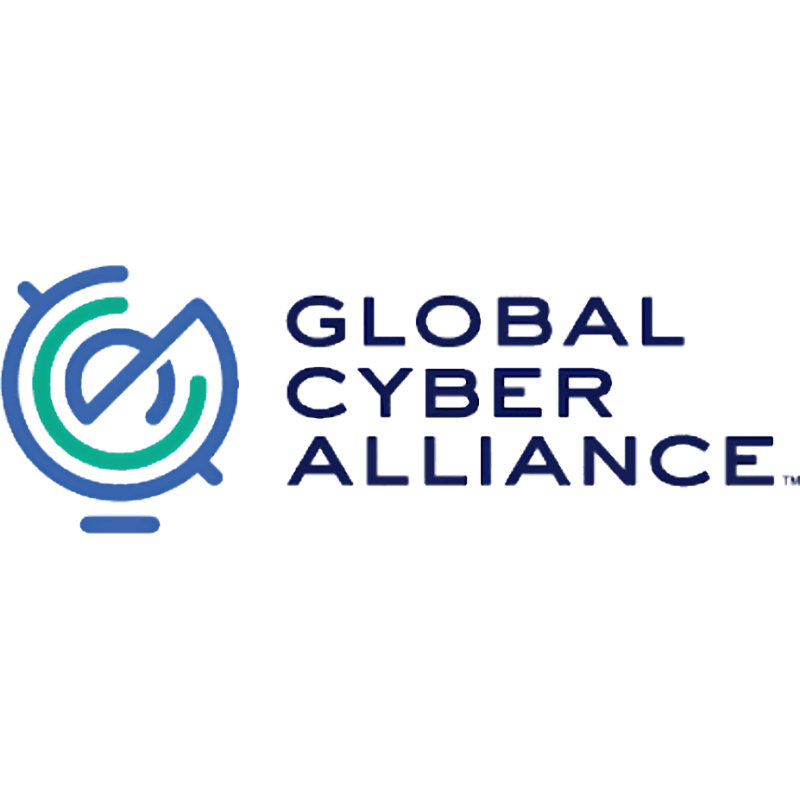
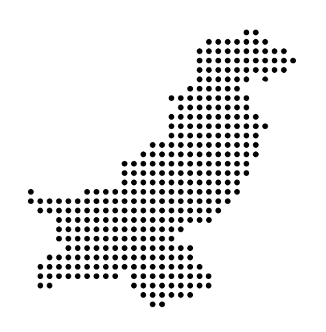

Cybersecurity Clinic
Hands-on defense training, real-world clinics, and modern tools to tackle evolving digital threats.
Defend the Digital Frontier
- Open to everyone, no matter your field of study
- Business, law, design, the arts, engineering, or the sciences all welcome
- Practical, hands-on experience defending against real cyber threats
- Live defense scenarios, no prior computer science background required
What You Will Learn
- Vulnerability Scanning and Penetration Testing
- Network Defense and Intrusion Detection Systems
- Incident Response Protocols
- Secure Coding Practices
- Compliance, Risk Management and Privacy
Built for Every Discipline
Open to students and professionals from every discipline, not just computer science. If you're curious about protecting people and organizations online, this clinic is for you.
Students of Every Discipline
Business, law, design, engineering or sciences. All majors welcome, no coding background needed
IT Professionals
Upskill and pivot into the cybersecurity sector
Startup Founders
Learn to protect your products and customer data
What Our Cohort Says
Real reflections from participants of the Innovatrium Cybersecurity Clinic at BNU.
I came in from a business background with zero coding experience and left able to run a full vulnerability scan. The live scenarios made everything click.
The mentors treated us like a real security team. Responding to a simulated breach under pressure taught me more than a whole semester of theory.
What stayed with me was how welcoming it was to non-technical students. I study design, and I now understand how to build safer products from day one.
The clinic gave me the confidence to pursue cybersecurity seriously. The hands-on labs are genuinely industry relevant, not just textbook exercises.
Intrusion detection finally made sense once I watched it happen live. The instructors break down complex ideas without dumbing them down.
A perfect mix of theory and practice. By the end I had built a small incident response playbook I still use in my own projects.
The networking alone was worth it. I met peers and mentors who genuinely care about security, and we still collaborate after the program.
Secure coding practices changed how I write software. I catch vulnerabilities now before they ever reach production.
Backed by Google.org and The Asia Foundation, this clinic feels world class. I would recommend it to anyone curious about defending the digital world.
Inside the Cybersecurity Clinic
Highlights from the orientation of our latest cybersecurity cohort at BNU.


Backed by the APAC Cybersecurity Fund
This clinic is proudly funded by Google.org and The Asia Foundation under the APAC Cybersecurity Fund, delivered in collaboration with the Consortium of Cyber Security and the Global Cyber Alliance.

Our Cyber Clinic Network
Live in Lahore today, expanding to Islamabad next.

APAC Cyber Clinic — in progress
Beaconhouse National University — Pakistan's first Cyber Clinic
Start Your Cyber Journey
Enroll in the next clinic session and level up your digital defense skills.
Register Now